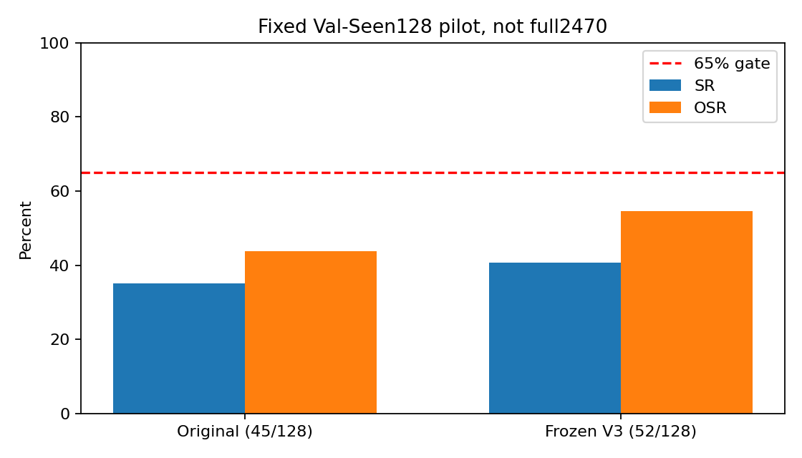

SR35.16%→40.62%，纠正11/误改4，未达到至少84成功的门槛，不启动全量。不是2470条全量成绩；没有Test，也没有用Val选其他版本。

| Index | Map | Original SR | Ours SR | Original NE | Ours NE | 变化 |
|---|---|---|---|---|---|---|
| 16 | birmingham_block_1 | 0 | 0 | 46.55 | 46.55 | unchanged |
| 25 | birmingham_block_1 | 1 | 1 | 2.95 | 2.95 | unchanged |
| 35 | birmingham_block_1 | 0 | 0 | 83.32 | 85.08 | unchanged |
| 40 | birmingham_block_1 | 1 | 1 | 19.28 | 9.23 | unchanged |
| 45 | birmingham_block_1 | 0 | 0 | 30.96 | 45.16 | unchanged |
| 56 | birmingham_block_1 | 0 | 0 | 38.35 | 38.35 | unchanged |
| 73 | birmingham_block_1 | 1 | 0 | 13.26 | 25.32 | harmed |
| 141 | birmingham_block_1 | 0 | 0 | 52.66 | 52.66 | unchanged |
| 152 | birmingham_block_1 | 0 | 0 | 25.90 | 36.42 | unchanged |
| 155 | birmingham_block_1 | 0 | 1 | 20.75 | 17.21 | corrected |
| 190 | birmingham_block_1 | 0 | 0 | 30.73 | 30.73 | unchanged |
| 222 | birmingham_block_1 | 1 | 0 | 13.20 | 25.54 | harmed |
| 234 | birmingham_block_1 | 1 | 1 | 3.70 | 3.70 | unchanged |
| 758 | birmingham_block_10 | 1 | 1 | 12.96 | 12.96 | unchanged |
| 762 | birmingham_block_11 | 0 | 0 | 47.74 | 41.41 | unchanged |
| 774 | birmingham_block_12 | 1 | 1 | 4.17 | 4.17 | unchanged |
| 788 | birmingham_block_12 | 1 | 1 | 3.42 | 3.42 | unchanged |
| 790 | birmingham_block_12 | 0 | 0 | 27.65 | 27.65 | unchanged |
| 814 | birmingham_block_12 | 0 | 0 | 27.30 | 27.30 | unchanged |
| 838 | birmingham_block_12 | 1 | 1 | 18.21 | 18.21 | unchanged |
| 841 | birmingham_block_12 | 1 | 1 | 8.22 | 8.22 | unchanged |
| 844 | birmingham_block_12 | 0 | 0 | 79.57 | 77.51 | unchanged |
| 336 | birmingham_block_3 | 1 | 1 | 19.92 | 19.92 | unchanged |
| 347 | birmingham_block_3 | 0 | 0 | 77.47 | 77.47 | unchanged |
| 362 | birmingham_block_3 | 0 | 0 | 120.84 | 102.15 | unchanged |
| 436 | birmingham_block_3 | 0 | 1 | 51.14 | 19.78 | corrected |
| 448 | birmingham_block_3 | 0 | 0 | 29.02 | 29.02 | unchanged |
| 478 | birmingham_block_3 | 1 | 1 | 7.05 | 13.58 | unchanged |
| 491 | birmingham_block_4 | 0 | 1 | 41.72 | 16.05 | corrected |
| 513 | birmingham_block_4 | 0 | 0 | 27.27 | 27.27 | unchanged |
| 515 | birmingham_block_4 | 0 | 0 | 48.01 | 51.76 | unchanged |
| 532 | birmingham_block_4 | 1 | 1 | 8.19 | 8.19 | unchanged |
| 551 | birmingham_block_4 | 1 | 0 | 19.26 | 33.13 | harmed |
| 552 | birmingham_block_4 | 0 | 0 | 26.46 | 26.46 | unchanged |
| 584 | birmingham_block_7 | 0 | 0 | 35.57 | 35.57 | unchanged |
| 606 | birmingham_block_7 | 0 | 0 | 21.91 | 21.91 | unchanged |
| 627 | birmingham_block_9 | 0 | 0 | 35.29 | 21.71 | unchanged |
| 629 | birmingham_block_9 | 0 | 1 | 62.88 | 13.43 | corrected |
| 714 | birmingham_block_9 | 0 | 0 | 33.81 | 31.21 | unchanged |
| 1252 | cambridge_block_12 | 1 | 1 | 7.95 | 7.07 | unchanged |
| 1275 | cambridge_block_12 | 0 | 0 | 94.51 | 78.74 | unchanged |
| 1303 | cambridge_block_12 | 1 | 1 | 13.67 | 13.67 | unchanged |
| 1320 | cambridge_block_12 | 1 | 1 | 17.65 | 17.65 | unchanged |
| 1330 | cambridge_block_12 | 0 | 0 | 37.64 | 37.64 | unchanged |
| 1350 | cambridge_block_12 | 0 | 0 | 50.67 | 50.67 | unchanged |
| 1374 | cambridge_block_12 | 1 | 1 | 7.38 | 7.38 | unchanged |
| 1389 | cambridge_block_12 | 0 | 0 | 36.37 | 36.37 | unchanged |
| 1406 | cambridge_block_12 | 0 | 0 | 79.26 | 79.26 | unchanged |
| 1409 | cambridge_block_13 | 1 | 1 | 19.71 | 19.71 | unchanged |
| 1428 | cambridge_block_13 | 0 | 0 | 21.89 | 21.89 | unchanged |
| 1448 | cambridge_block_13 | 0 | 0 | 160.20 | 160.20 | unchanged |
| 1457 | cambridge_block_13 | 0 | 0 | 58.10 | 38.45 | unchanged |
| 1473 | cambridge_block_13 | 1 | 1 | 9.46 | 9.46 | unchanged |
| 1504 | cambridge_block_13 | 1 | 1 | 9.55 | 9.55 | unchanged |
| 1587 | cambridge_block_13 | 1 | 1 | 14.83 | 14.83 | unchanged |
| 1599 | cambridge_block_17 | 0 | 0 | 55.75 | 55.75 | unchanged |
| 1602 | cambridge_block_17 | 0 | 0 | 55.75 | 56.98 | unchanged |
| 1637 | cambridge_block_17 | 0 | 0 | 93.35 | 93.35 | unchanged |
| 1653 | cambridge_block_18 | 1 | 1 | 16.30 | 16.30 | unchanged |
| 1672 | cambridge_block_18 | 1 | 1 | 11.73 | 4.34 | unchanged |
| 1682 | cambridge_block_18 | 1 | 1 | 2.90 | 2.89 | unchanged |
| 1689 | cambridge_block_18 | 0 | 0 | 26.41 | 38.67 | unchanged |
| 1701 | cambridge_block_18 | 1 | 1 | 19.97 | 19.98 | unchanged |
| 1705 | cambridge_block_19 | 0 | 0 | 141.37 | 141.37 | unchanged |
| 1718 | cambridge_block_19 | 0 | 0 | 66.55 | 66.55 | unchanged |
| 1721 | cambridge_block_19 | 0 | 0 | 22.41 | 34.60 | unchanged |
| 1753 | cambridge_block_20 | 1 | 1 | 17.73 | 18.06 | unchanged |
| 1765 | cambridge_block_20 | 0 | 1 | 26.63 | 15.07 | corrected |
| 1813 | cambridge_block_20 | 1 | 1 | 13.30 | 12.53 | unchanged |
| 1814 | cambridge_block_20 | 0 | 0 | 154.02 | 135.39 | unchanged |
| 1834 | cambridge_block_20 | 0 | 0 | 44.14 | 44.14 | unchanged |
| 1862 | cambridge_block_20 | 1 | 1 | 15.57 | 11.81 | unchanged |
| 1889 | cambridge_block_20 | 1 | 1 | 2.69 | 16.60 | unchanged |
| 1891 | cambridge_block_20 | 0 | 0 | 105.72 | 105.72 | unchanged |
| 1914 | cambridge_block_20 | 0 | 0 | 92.01 | 91.43 | unchanged |
| 1917 | cambridge_block_20 | 0 | 1 | 30.75 | 16.48 | corrected |
| 1925 | cambridge_block_20 | 0 | 0 | 54.87 | 54.87 | unchanged |
| 1926 | cambridge_block_20 | 1 | 1 | 14.69 | 14.69 | unchanged |
| 1937 | cambridge_block_20 | 0 | 1 | 24.30 | 10.47 | corrected |
| 1943 | cambridge_block_20 | 0 | 0 | 45.21 | 45.21 | unchanged |
| 1979 | cambridge_block_21 | 1 | 1 | 15.26 | 15.26 | unchanged |
| 1994 | cambridge_block_21 | 0 | 0 | 23.38 | 38.03 | unchanged |
| 2004 | cambridge_block_21 | 0 | 0 | 36.58 | 74.84 | unchanged |
| 2008 | cambridge_block_21 | 0 | 0 | 75.83 | 75.83 | unchanged |
| 2042 | cambridge_block_21 | 0 | 0 | 37.73 | 37.73 | unchanged |
| 2048 | cambridge_block_21 | 0 | 0 | 38.53 | 36.72 | unchanged |
| 2079 | cambridge_block_21 | 0 | 1 | 22.47 | 8.52 | corrected |
| 2092 | cambridge_block_21 | 0 | 0 | 37.09 | 37.09 | unchanged |
| 2101 | cambridge_block_21 | 1 | 1 | 17.89 | 17.89 | unchanged |
| 2118 | cambridge_block_21 | 0 | 1 | 22.54 | 16.29 | corrected |
| 2159 | cambridge_block_23 | 0 | 0 | 28.85 | 28.85 | unchanged |
| 2167 | cambridge_block_23 | 1 | 1 | 2.24 | 2.24 | unchanged |
| 2176 | cambridge_block_23 | 0 | 0 | 20.45 | 20.45 | unchanged |
| 2187 | cambridge_block_25 | 0 | 0 | 67.50 | 84.65 | unchanged |
| 2206 | cambridge_block_28 | 0 | 0 | 23.38 | 23.38 | unchanged |
| 2227 | cambridge_block_28 | 0 | 0 | 25.19 | 25.19 | unchanged |
| 2269 | cambridge_block_28 | 1 | 1 | 10.90 | 10.90 | unchanged |
| 2277 | cambridge_block_28 | 0 | 0 | 42.92 | 27.00 | unchanged |
| 2305 | cambridge_block_28 | 0 | 0 | 26.27 | 26.27 | unchanged |
| 2325 | cambridge_block_28 | 1 | 1 | 11.03 | 11.03 | unchanged |
| 2338 | cambridge_block_28 | 1 | 1 | 2.62 | 2.62 | unchanged |
| 2353 | cambridge_block_28 | 0 | 0 | 31.70 | 31.49 | unchanged |
| 2363 | cambridge_block_28 | 0 | 1 | 30.27 | 18.13 | corrected |
| 2379 | cambridge_block_33 | 1 | 0 | 19.05 | 24.29 | harmed |
| 2390 | cambridge_block_33 | 0 | 0 | 25.56 | 25.56 | unchanged |
| 2412 | cambridge_block_33 | 0 | 0 | 52.56 | 41.64 | unchanged |
| 880 | cambridge_block_6 | 1 | 1 | 17.44 | 2.78 | unchanged |
| 903 | cambridge_block_6 | 0 | 0 | 24.22 | 24.22 | unchanged |
| 919 | cambridge_block_7 | 1 | 1 | 11.81 | 11.81 | unchanged |
| 928 | cambridge_block_7 | 0 | 0 | 22.29 | 22.29 | unchanged |
| 939 | cambridge_block_7 | 1 | 1 | 17.24 | 17.24 | unchanged |
| 941 | cambridge_block_7 | 1 | 1 | 10.80 | 17.24 | unchanged |
| 951 | cambridge_block_7 | 0 | 0 | 25.60 | 25.60 | unchanged |
| 969 | cambridge_block_7 | 0 | 0 | 28.84 | 28.84 | unchanged |
| 985 | cambridge_block_7 | 0 | 0 | 39.30 | 39.30 | unchanged |
| 997 | cambridge_block_7 | 1 | 1 | 10.81 | 10.81 | unchanged |
| 1015 | cambridge_block_7 | 0 | 0 | 33.38 | 33.37 | unchanged |
| 1105 | cambridge_block_9 | 0 | 0 | 36.20 | 36.20 | unchanged |
| 1139 | cambridge_block_9 | 1 | 1 | 8.77 | 8.77 | unchanged |
| 1161 | cambridge_block_9 | 0 | 0 | 94.30 | 83.02 | unchanged |
| 1169 | cambridge_block_9 | 0 | 0 | 239.45 | 228.27 | unchanged |
| 1178 | cambridge_block_9 | 1 | 1 | 17.73 | 17.73 | unchanged |
| 1215 | cambridge_block_9 | 0 | 0 | 31.50 | 31.50 | unchanged |
| 1224 | cambridge_block_9 | 0 | 1 | 21.03 | 6.75 | corrected |
| 1240 | cambridge_block_9 | 0 | 0 | 35.14 | 24.20 | unchanged |
| 1241 | cambridge_block_9 | 0 | 0 | 45.27 | 45.27 | unchanged |
| 1243 | cambridge_block_9 | 0 | 0 | 23.52 | 23.52 | unchanged |
| 1244 | cambridge_block_9 | 0 | 0 | 23.52 | 23.52 | unchanged |